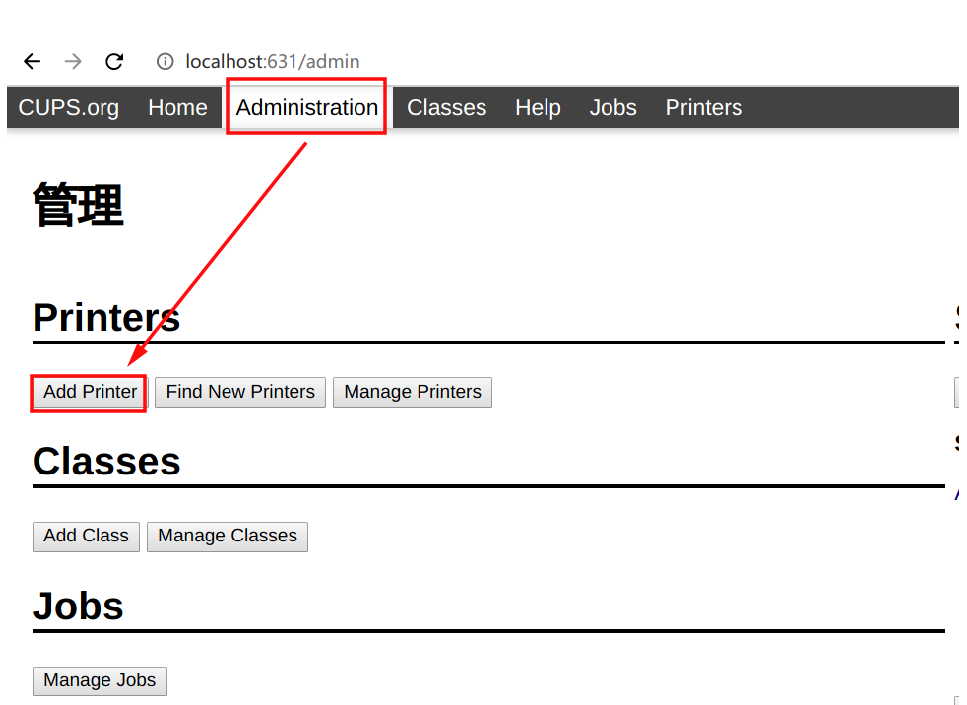
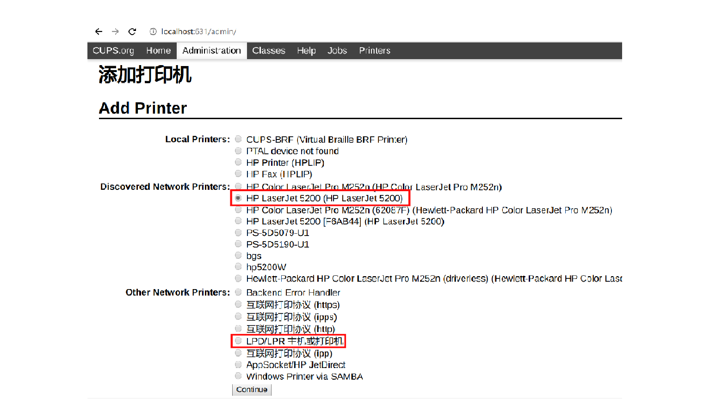
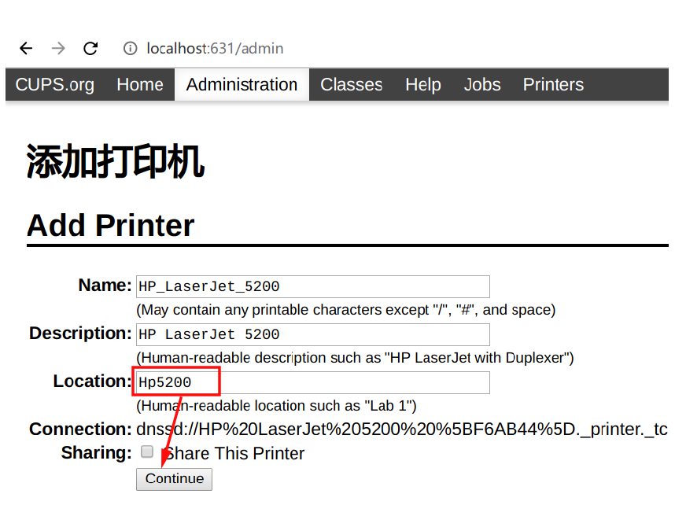
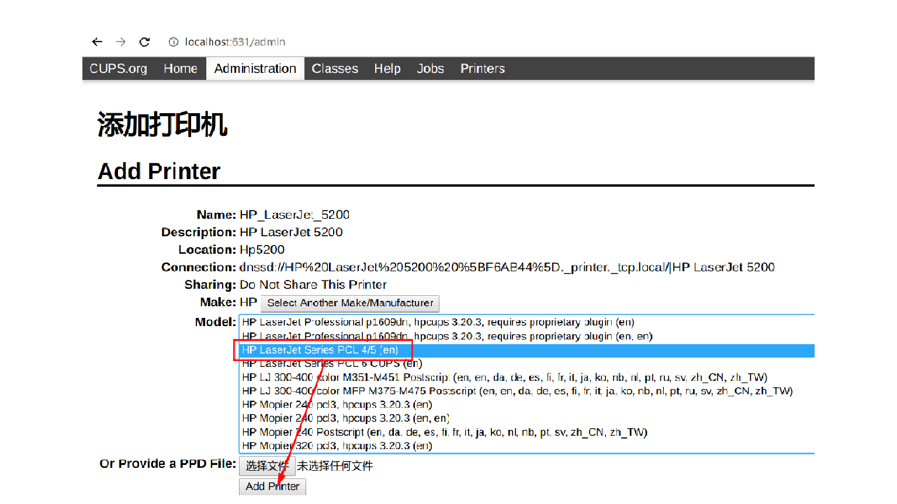
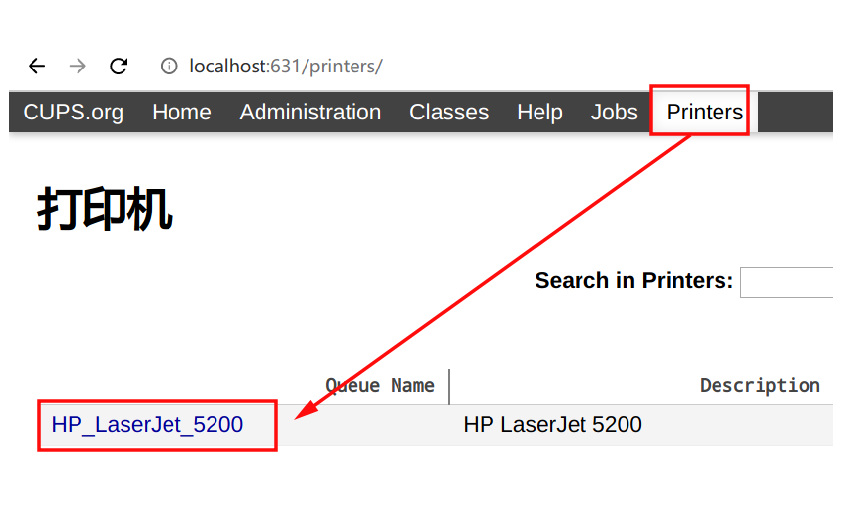

[Arch]-6-Arch安装网络打印机驱动
引言
这边文章介绍Arch如何使用cups软件来发现和使用网络打印机。
文章目录
0×1.安装CUPS与打印机驱动
#1.安装cups以及打印机驱动，本例我的网络打印机是HP，所以安装hpoj和hplip这两个驱动 # 如果是其他牌子的打印机，建议安装这个驱动集合gutenprint，三星打印机请安装splix qing@qingsword.com:~$ sudo pacman -S cups ghostscript gsfonts hpoj hplip #2.启动服务 qing@qingsword.com:~$ sudo systemctl restart avahi-daemon.service && sudo systemctl start cups-browsed.service
0×2.如何使用CUPS安装打印机
启动服务之后，可以在浏览器中使用这个网址打开CUPS配置页面：http://localhost:631
点击添加打印机后，可能会弹出一个窗口让你输入用户名和密码，请输入root和root密码（普通用户添加打印机可能会失败）：
如果能够自动发现打印机会出现在上面红框那个列表里，只需要选择正确的打印机就行，如果没有发现设备，我们就需要选择下面的"LPD/LPR主机或打印机"来手动输入打印机地址：
搜索到打印机后，在location中填入打印机标识（WPS打印时选择打印机看到的就是这个名称）：
在下图这一步中，一定要选择对打印机的型号：
已经添加的打印机，可以在Printers页面查看和管理，点击打印机的名称，可以看到具体参数：
如果选择错了打印机驱动，可以在打印机详细页面，选择Modify printer来重新选择打印机驱动：
#注：每次重启如果需要使用打印机，都需要先启动服务 qing@qingsword.com:~$ sudo systemctl start cups-browsed.service #或者将它加到开机启动中 qing@qingsword.com:~$ sudo systemctl enable cups-browsed.service